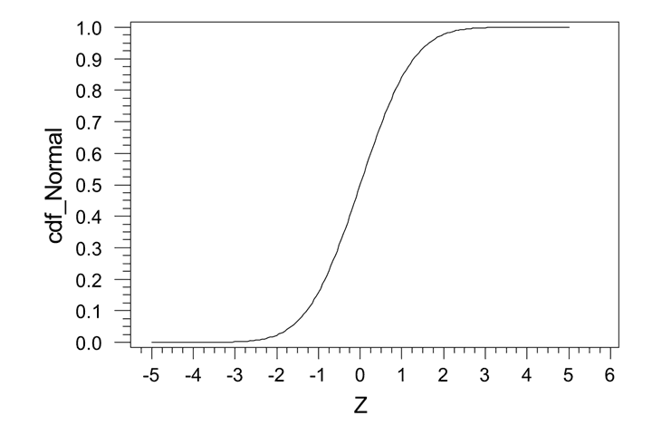

TriINV Function
The TriINV function returns the inverse of the Triangular
Distribution Cumulative Distribution Function (CDF) (See Image
1). The Triangular Distribution CDF returns the probability of a normally
distributed value X≥x. The inverse of that would be, for a
given probability, what is a value X≥x. This function is useful
for randomly assigning values that are triangularly distributed.

Image 1 The Triangular Distribution Cumulative Distribution Function
Syntax
TriINV(probability,min,most likely,max)
- Probability is a number that is between zero and 1
- Min is the lowest value of the distribution
- Most Likely is the value that occurs most frequentlly
- Max is the highest valueof the distribution
Restrictions:
Probability must be less than 1 and greater than 0, if it is not, a
parse error is raised.
All arguments must be numeric, if they are not, a parse error will be
raised
The min cannot be greater than the most likely, and the max cannot be less than the most likely, if it is, a
parse error is raised.
Examples
| Expression |
Result |
| TriINV(.5,5,7,15) |
8.67544467966324 |
| TriINV(.99,5,10,15) |
14.2928932188
|
| TriINV(.01,5,10,15) |
5.70710678118655
|
Common Use
A common use of the expression is to use the Rand() function for the
probability. When NormINV uses the Rand() function for the
probability, each row within the column where the expression is used
randomly assigns a triangularly distributed value in the result of the
expression. (i.e. TriINV(rand(),1,2,3), this could be representative of
foundation heights for structures distributed between 1 ft and 3 ft,
with a most likely value of 2 ft)